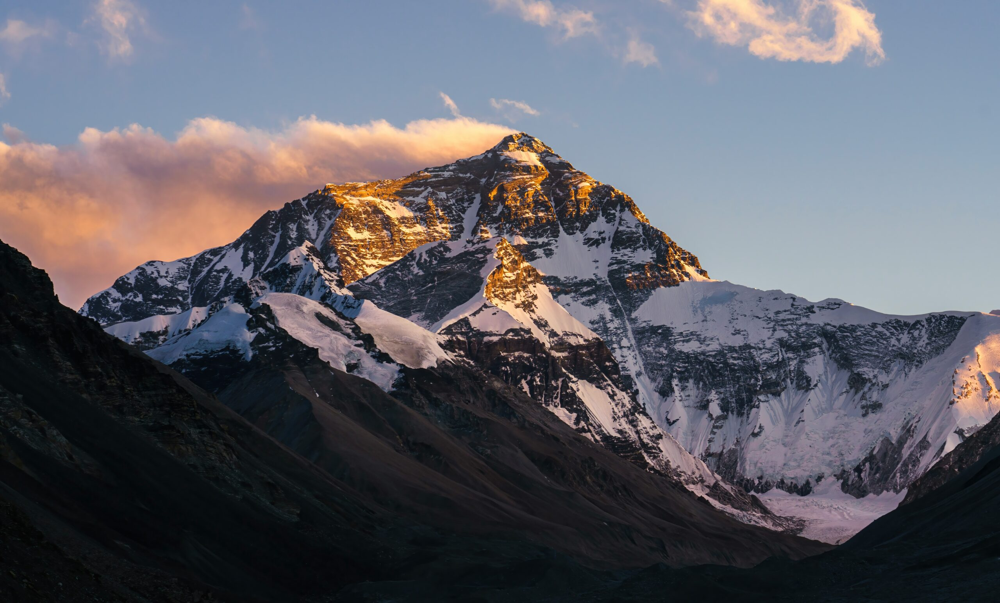
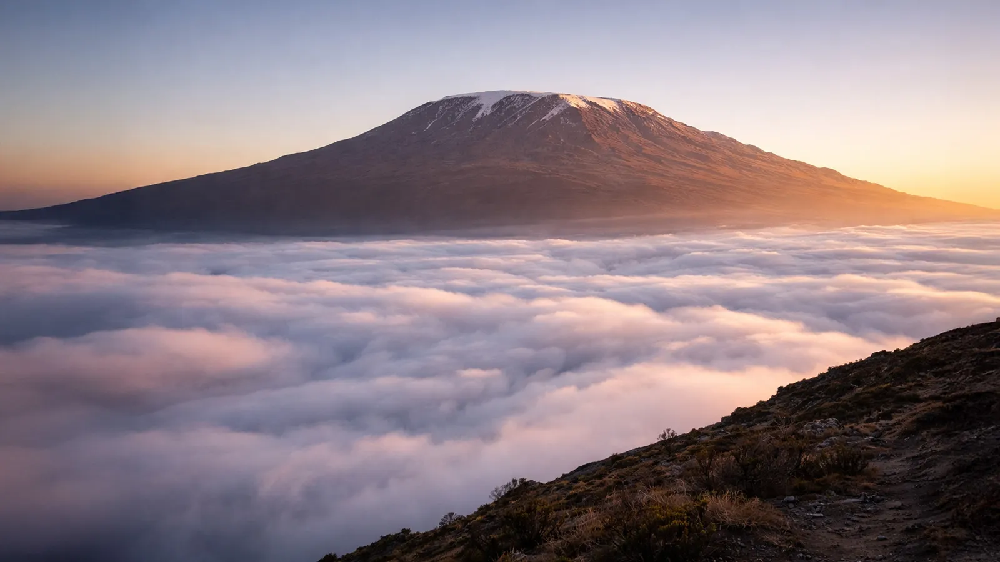
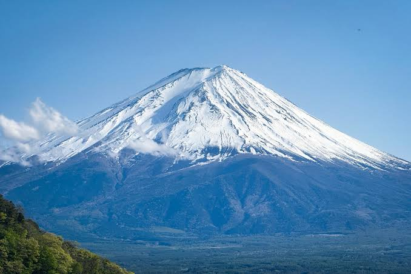

EduTube
Some famous Mountains
Complete Course Structure

Mount Everest is the highest mountain in the world. It is part of the Himalayan Mountain Range and lies on the border of Nepal and China.

K2 is the second-highest mountain in the world. It is located in the Karakoram Range between Pakistan and China.

Kangchenjunga is the third-highest mountain in the world. It lies on the border between India and Nepal.

Mount Kilimanjaro is the highest mountain in Africa. It is a dormant volcano located in Tanzania.

Mount Fuji is Japan's highest mountain. It is a beautiful volcanic mountain and an important cultural symbol of Japan.